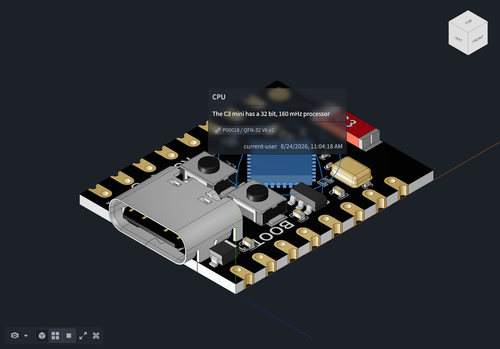
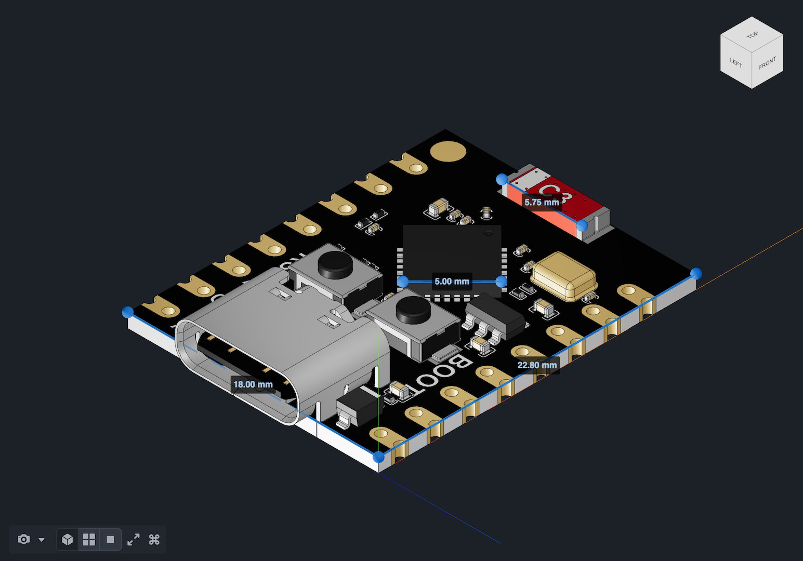

Vulcan provides tools for annotating, measuring, sectioning, styling, coloring, and repositioning a CAD model. Annotations, measurements, and section planes can be saved as Ontology objects, while function outputs drive part coloring and transforms. Each tool can be shown or hidden when Vulcan is embedded in a Workshop module.
All screenshots use notional data.
Annotations mark a specific point on a part with a label, body text, and a color-coded intent. Use them to flag:

Measurements capture distances between points on a model and provide a sense of physical scale. A measurement is an ordered set of points, and Vulcan reports the total distance along the polyline they define.
When a model format defines physical units, Vulcan uses them by default. Scene units are the raw, dimensionless coordinate values stored in the model file. For unit-agnostic formats, Vulcan reports distances in scene units unless the CAD object has a property carrying the model_unit type class. When neither the file nor the CAD object supplies a unit, you can set one for the current session with Scene units in Measurement settings. This setting appears only in that case, and it resets when you reload the page.

A section plane is a flat plane positioned in 3D space. It hides geometry on one side so that you can see inside an assembly. Use section planes to inspect internal components without hiding individual parts. For example, you can verify a bearing's position inside a housing or review routing paths through a machine frame.
A saved section plane stores its position and orientation so that the cross-section can be recalled later or shared across sessions and users.
Mesh style quickly changes how model geometry is rendered. You can switch between Normal, X-Ray, and Wireframe views.
Part coloring uses property or function outputs to drive Scene coloring, providing visual context for data such as:
Part transforms use function outputs to reposition parts or assemblies in space. Use transforms to demonstrate: